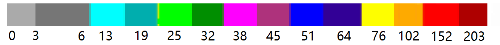
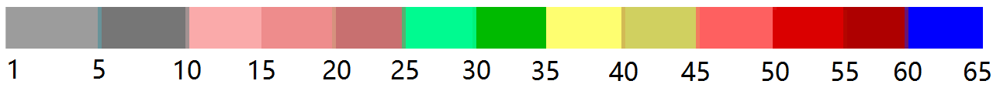
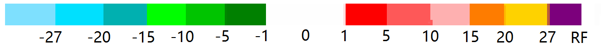
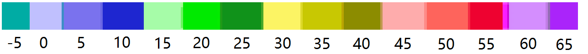

<div fxLayout="row" fxLayoutAlign="start center" style="width: 100%;height: 100%;">
  <div style="width: 310px;height: 100%;">
    <div id="queryDiv">
      <mat-card style="padding: 0px;">
        <mat-card-content fxLayout="column">
          <div fxLayout="row" fxLayoutAlign="start center" fxLayoutGap="10px" style="width: 100%;height: 100%;">
            <label style="width: 150px">查询时间</label>
            <mat-form-field style="width:130px;">
              <input matInput [(ngModel)]="selTime" mode="daytime" [dpDayPicker]="timeConfig" theme="dp-material" attachTo=".mat-input-wrapper">
            </mat-form-field>
          </div>
          <div fxLayout="row" fxLayoutAlign="start center" fxLayoutGap="10px" style="width: 100%;height: 100%;padding-top: 10px;">
            <mat-checkbox style="width: 150px" [(ngModel)]="check1" (change)="showLayer('check1', check1)">组合反射率</mat-checkbox>
            <mat-checkbox [(ngModel)]="check2" (change)="showLayer('check2', check2)">风暴路径</mat-checkbox>
          </div>
          <div fxLayout="row" fxLayoutAlign="start center" fxLayoutGap="10px" style="width: 100%;height: 100%;padding-top: 15px;">
            <mat-checkbox style="width: 150px" [(ngModel)]="check3" (change)="showLayer('check3', check3)">1h降水估计</mat-checkbox>
            <mat-checkbox [(ngModel)]="check4" (change)="showLayer('check4', check4)">3h降水估计</mat-checkbox>
          </div>
          <div fxLayout="row" fxLayoutAlign="start center" fxLayoutGap="10px" style="width: 100%;height: 100%;padding-top: 15px;">
            <mat-checkbox [(ngModel)]="check5" (change)="showLayer('check5', check5)">垂直液态水含量</mat-checkbox>
          </div>
          <div fxLayout="row" fxLayoutAlign="start center" fxLayoutGap="10px" style="width: 100%;height: 100%;">
            <mat-checkbox style="width: 150px" [(ngModel)]="check6" (change)="changeLayerBySelect(true)">径向速度</mat-checkbox>

            <label for="">仰角</label>
            <mat-form-field style="width:100px;">
              <mat-select [disabled]='!check6' [(ngModel)]="selJX" (change)="changeLayerBySelect(true)">
                <mat-option value="01.27">0.5度</mat-option>
                <mat-option value="02.27">1.5度</mat-option>
                <mat-option value="03.27">2.4度</mat-option>
                <mat-option value="04.27">3.4度</mat-option>
              </mat-select>
            </mat-form-field>
          </div>
          <div fxLayout="row" fxLayoutAlign="start center" fxLayoutGap="10px" style="width: 100%;height: 100%;margin-top:-20px;">
            <mat-checkbox style="width: 150px" [(ngModel)]="check7" (change)="changeLayerBySelect(true)">基本反射率</mat-checkbox>
            <label for="">仰角</label>
            <mat-form-field style="width:100px;">
              <mat-select [disabled]='!check7' [(ngModel)]="selJB" (change)="changeLayerBySelect(true)">
                <mat-option value="01.19">0.5度</mat-option>
                <mat-option value="02.19">1.5度</mat-option>
                <mat-option value="03.19">2.4度</mat-option>
                <mat-option value="04.19">3.4度</mat-option>
              </mat-select>
            </mat-form-field>
          </div>
          <div fxLayout="row" fxLayoutAlign="center center" fxLayoutGap="10px" style="width: 100%;height: 100%;">
            <button mat-raised-button color="primary" (click)="loadData()">查询</button>
            <button mat-raised-button color="primary" (click)="forwardradar()">后退</button>
            <button mat-raised-button color="primary" (click)="backwardradar()">前进</button>
          </div>
          <div fxLayout="column" fxLayoutAlign="start start" fxLayoutGap="10px" style="width: 100%;height: 100%;padding-top:20px;">
            <label>一/三小时降水估计(mm):</label>
            
            <label>垂直液态水含量(kg/m2):</label>
            
            <label>经向速度(m/s):</label>
            
            <label>基本/组合反射率(dBZ):</label>
            
          </div>
        </mat-card-content>
      </mat-card>
    </div>
  </div>
  <div fxFlex="1 1 auto" style="height: 100%;">
    <div class="mapView" #map id="esriMap">
    </div>
    <div id="layerDiv">
      <mat-accordion>
        <mat-expansion-panel>
          <mat-expansion-panel-header>
            <mat-panel-title>
              图层管理
            </mat-panel-title>
          </mat-expansion-panel-header>
          <div fxLayout="column" fxLayoutAlign="start center" fxLayoutGap="10px">
            <mat-radio-group [(ngModel)]="mapType" (change)="_esriLoad.ChangeMapType(mapType)">
              <mat-radio-button [value]="1">地图</mat-radio-button>
              <mat-radio-button [value]="2">影像</mat-radio-button>
            </mat-radio-group>
            <div>
              <mat-checkbox [(ngModel)]="boundaryLy" (change)="_esriLoad.ShowOrHideLayer('boundary', boundaryLy)"> 界限</mat-checkbox>
              <mat-checkbox [(ngModel)]="stationLy" (change)="_esriLoad.ShowOrHideLayer('station', stationLy)">站点</mat-checkbox>
            </div>
          </div>
        </mat-expansion-panel>
      </mat-accordion>
    </div>
  </div>
</div>